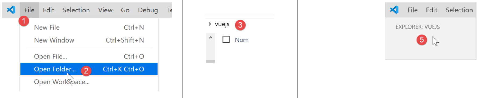

2. Configurazione di un ambiente di sviluppo
Stiamo utilizzando l'ambiente di sviluppo descritto nel documento [2]:
- Visual Studio Code (VSCode) per scrivere codice JavaScript;
- [node.js] per eseguirlo;
- [npm] per scaricare e installare le librerie JavaScript di cui avremo bisogno;
Creiamo un ambiente di lavoro in [VSCode]:

- Nei passaggi [1-5], apriamo una cartella [vuejs] vuota in [VSCode];

- Nei passaggi [8-10], installiamo la dipendenza [@vue/cli], che ci consentirà di inizializzare un progetto [Vue.js]. Questa dipendenza include un gran numero di pacchetti (diverse centinaia);
Nello stesso terminale, digitiamo quindi il comando [vue create .], che crea un progetto [Vue.js] nella directory corrente (.):

- In [13], inizia una serie di domande per configurare il progetto;

- Una volta che si è risposto a tutte le domande, vengono scaricati nuovi pacchetti e viene generato un progetto nella directory corrente [14].
Diamo un'occhiata a ciò che è stato generato. Il file [package.json] è il seguente:
{
"name": "vuejs",
"version": "0.1.0",
"private": true,
"scripts": {
"serve": "vue-cli-service serve vuejs-20/main.js",
"build": "vue-cli-service build vuejs-20/main.js",
"lint": "vue-cli-service lint"
},
"dependencies": {
"axios": "^0.19.0",
"bootstrap": "^4.3.1",
"bootstrap-vue": "^2.0.2",
"core-js": "^2.6.5",
"vue": "^2.6.10",
"vue-router": "^3.1.3",
"vuex": "^3.1.1"
},
"devDependencies": {
"@vue/cli-plugin-babel": "^3.11.0",
"@vue/cli-plugin-eslint": "^3.11.0",
"@vue/cli-service": "^3.11.0",
"babel-eslint": "^10.0.1",
"eslint": "^5.16.0",
"eslint-plugin-vue": "^5.0.0",
"vue-template-compiler": "^2.6.10"
},
"eslintConfig": {
"root": true,
"env": {
"node": true
},
"extends": [
"plugin:vue/essential",
"eslint:recommended"
],
"rules": {},
"parserOptions": {
"parser": "babel-eslint"
}
},
"postcss": {
"plugins": {
"autoprefixer": {}
}
},
"browserslist": [
"> 1%",
"last 2 versions"
]
}
Commenti
- righe 14–22: Tra le dipendenze necessarie per lo sviluppo, vediamo riferimenti ai due strumenti [eslint, babel] già utilizzati nei due capitoli precedenti. A questi si aggiungono i plugin per questi due strumenti destinati all'uso all'interno di [vue.js];
- riga 34: il pacchetto [babel-eslint] gestirà la transpilazione da ES6 a ES5 del codice JavaScript;
- righe 5–9: sono state create tre attività [npm]:
- [build]: utilizzato per compilare la versione del progetto pronta per la produzione;
- [serve]: esegue il progetto su un server web. Questo strumento viene utilizzato per eseguire test durante lo sviluppo. Come con [webpack-dev-server], la modifica del codice sorgente del progetto attiva automaticamente la ricompilazione del progetto e il ricaricamento da parte del server web;
- [lint]: utilizzato per analizzare il codice JavaScript e generare report. In questa sede non utilizzeremo questo strumento;
È stato generato un file [README.md] con il seguente contenuto:
# vuejs
## Project setup
```
npm install
```
### Compiles and hot-reloads for development
```
npm run serve
```
### Compiles and minifies for production
```
npm run build
```
### Run your tests
```
npm run test
```
### Lints and fixes files
```
npm run lint
```
### Customize configuration
See [Configuration Reference](https://cli.vuejs.org/config/).
Questo file riassume i comandi da utilizzare per la gestione del progetto.
Sappiamo che in [VSCode] sono disponibili per l'esecuzione le attività [npm]:

- nei passaggi [1-3] si esegue il comando [serve], che compila e quindi esegue il progetto [4-5];
All'URL [http://localhost:8080], otteniamo la seguente pagina:

Spiegheremo più avanti cosa ha portato a questa pagina.
Continuiamo a configurare il nostro ambiente di lavoro:

- nel punto [2] sopra, vediamo gli indicatori [git]. [git] è un sistema di controllo delle versioni del codice sorgente che consente di gestire le versioni successive del codice e di condividerle tra gli sviluppatori. Disattiveremo questo strumento per il progetto;
- In [3-5], andiamo alle proprietà del progetto;

- in [9-10], disabilitiamo l'uso di [git] nel progetto;
Scriveremo vari test per dimostrare come funziona [vue.js]. Tuttavia, non vogliamo creare un nuovo progetto ogni volta, poiché ciò richiederebbe la generazione di una cartella [node_modules] ogni volta, e questa cartella ha una dimensione di diverse centinaia di megabyte. Rivediamo le attività [npm] nel file [package.json]:
"scripts": {
"serve": "vue-cli-service serve vuejs-00/main.js",
"build": "vue-cli-service build vuejs-00/main.js",
"lint": "vue-cli-service lint"
},
- riga 2: il comando [serve] utilizza per impostazione predefinita:
- il file [public/index.html];
- associato al file [src/main.js];
Alla riga 2, è possibile specificare il punto di ingresso del progetto per il comando [serve], ad esempio:
"serve": "vue-cli-service serve vuejs-00/main.js",
Proviamo:

- in [1], la cartella [src] è stata rinominata [vuejs-00];
- In [2-3], il comando [serve] è stato modificato;
- In [4-6], eseguiamo il progetto;
Otteniamo lo stesso risultato di prima:

Per i nostri test, procederemo come segue:
- scrivendo il codice in una cartella [vuejs-xx] all'interno del progetto;
- testare questo progetto utilizzando il comando [vue-cli-service serve vuejs-xx/main.js] nel file [package.json];
Quando il server di sviluppo è in esecuzione, qualsiasi modifica apportata a uno dei file di progetto attiva una ricompilazione. Per questo motivo, disattiviamo la modalità [Salvataggio automatico] in [VSCode]. Infatti, non vogliamo che si verifichi una ricompilazione ogni volta che digitiamo dei caratteri in uno dei file di progetto. Desideriamo che la ricompilazione avvenga solo in determinati momenti:

- in [2], l'opzione [Salvataggio automatico] non deve essere selezionata;